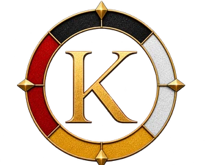

Le Manifeste
Écosystème
Krysalide
Parcours Opus Magnum
Le Miroir
Praxis
Publications
Ce que révèlent vraiment les chiffres d'un compte
Fondateur
Entrer en contact
Krysopée · Questionnaire
Un seul mot,
des risques très différents
Un point de situation sur ce que vous savez des ETF. Ni note, ni classement.